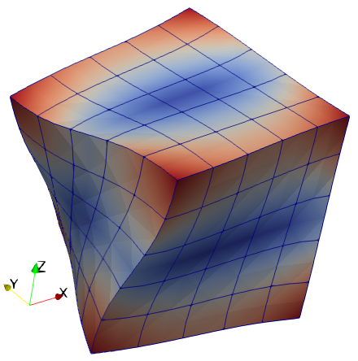

Vibration of a cube of nearly incompressible material
Description
Compute the free-vibration spectrum of a unit cube of nearly incompressible isotropic material, E = 1, ν = 0.499, and ρ = 1 (refer to [1]).
The solution with the FinEtools package is compared with a commercial software solution, and hence we also export the model to Abaqus.
References
[1] Puso MA, Solberg J (2006) A stabilized nodally integrated tetrahedral. International Journal for Numerical Methods in Engineering 67: 841-867. [2] P. Krysl, Mean-strain 8-node hexahedron with optimized energy-sampling stabilization, Finite Elements in Analysis and Design 108 (2016) 41–53.

Goals
- Show how to generate hexahedral mesh, mirroring and merging together parts.
- Export the model to Abaqus.
#Definitions
This is the finite element toolkit itself.
using FinEtoolsThe linear stress analysis application is implemented in this package.
using FinEtoolsDeforLinearConvenience import.
using FinEtools.MeshExportModuleThe eigenvalue problem is solved with the Lanczos algorithm from this package.
using ArpackThe material properties and dimensions are defined with physical units.
E = 1*phun("PA");
nu = 0.499;
rho = 1*phun("KG/M^3");
a = 1*phun("M"); # length of the side of the cubeWe generate a mesh of 5 x 5 x 5 serendipity 20-node hexahedral elements in a regular grid.
fens, fes = H20block(a, a, a, 5, 5, 5);The problem is solved in three dimensions and hence we create the displacement field as three-dimensional with three displacement components per node. The degrees of freedom are then numbered (note that no essential boundary conditions are applied, since the cube is free-floating).
geom = NodalField(fens.xyz)
u = NodalField(zeros(size(fens.xyz,1),3)) # displacement field
numberdofs!(u);The model is fully three-dimensional, and hence the material model and the FEMM created below need to refer to an appropriate model-reduction scheme.
MR = DeforModelRed3D
material = MatDeforElastIso(MR, rho, E, nu, 0.0);Note that we compute the stiffness and the mass matrix using different FEMMs. The difference is only the quadrature rule chosen: in order to make the mass matrix non-singular, an accurate Gauss rule needs to be used, whereas for the stiffness matrix we want to avoid the excessive stiffness and therefore the reduced Gauss rule is used.
femm = FEMMDeforLinear(MR, IntegDomain(fes, GaussRule(3,2)), material);
K = stiffness(femm, geom, u)
femm = FEMMDeforLinear(MR, IntegDomain(fes, GaussRule(3,3)), material)
M = mass(femm, geom, u);The free vibration problem can now be solved. In order for the eigenvalue solver to work well, we apply mass-shifting (otherwise the first matrix given to the solver – stiffness – would be singular). We specify the number of eigenvalues to solve for, and we guess the frequency with which to shift as 0.01 Hz.
neigvs = 20 # how many eigenvalues
OmegaShift = (0.01*2*pi)^2; # The frequency with which to shiftThe eigs routine can now be invoked to solve for a given number of frequencies from the smallest-magnitude end of the spectrum. Note that the mass shifting needs to be undone when the solution is obtained.
evals, evecs, nconv = eigs(K+OmegaShift*M, M; nev=neigvs, which=:SM)
@show nconv == neigvs
evals = evals .- OmegaShift;
fs = real(sqrt.(complex(evals)))/(2*pi)
println("Eigenvalues: $fs [Hz]")The first nonzero frequency, frequency 7, should be around .263 Hz.
The computed mode can be visualized in Paraview. Use the "Animation view" to produce moving pictures for the mode.
mode = 7
scattersysvec!(u, v[:,mode])
File = "unit_cube_modes.vtk"
vtkexportmesh(File, fens, fes; vectors=[("mode$mode", u.values)])
@async run(`"paraview.exe" $File`);Finally we export the model to Abaqus. Note that we specify the mass density property (necessary for dynamics).
AE = AbaqusExporter("unit_cube_modes_h20");
HEADING(AE, "Vibration modes of unit cube of almost incompressible material.");
COMMENT(AE, "The first six frequencies are rigid body modes.");
COMMENT(AE, "The first nonzero frequency (7) should be around 0.26 Hz");
PART(AE, "part1");
END_PART(AE);
ASSEMBLY(AE, "ASSEM1");
INSTANCE(AE, "INSTNC1", "PART1");
NODE(AE, fens.xyz);
COMMENT(AE, "The hybrid form of the serendipity hexahedron is chosen because");
COMMENT(AE, "the material is nearly incompressible.");
ELEMENT(AE, "C3D20RH", "AllElements", 1, connasarray(fes))
ORIENTATION(AE, "GlobalOrientation", vec([1. 0 0]), vec([0 1. 0]));
SOLID_SECTION(AE, "elasticity", "GlobalOrientation", "AllElements");
END_INSTANCE(AE);
END_ASSEMBLY(AE);
MATERIAL(AE, "elasticity")
ELASTIC(AE, E, nu)
DENSITY(AE, rho)
STEP_FREQUENCY(AE, neigvs)
END_STEP(AE)
close(AE)It remains is to load the model into Abaqus and execute it as a job. Alternatively Abaqus can be called on the input file to carry out the analysis at the command line as
abaqus job=unit_cube_modes_h20.inpThe output database unit_cube_modes_h20.odb can then be loaded for postprocessing, for instance from the command line as
abaqus viewer database=unit_cube_modes_h20.odbDon't forget to compare the computed frequencies and the mode shapes. For instance, the first six frequencies should be nearly 0, and the seventh frequency should be approximately 0.262 Hz. There may be very minor differences due to the fact that the FinEtools formulation is purely displacement-based, whereas the Abaqus model is hybrid (displacement plus pressure).
This page was generated using Literate.jl.